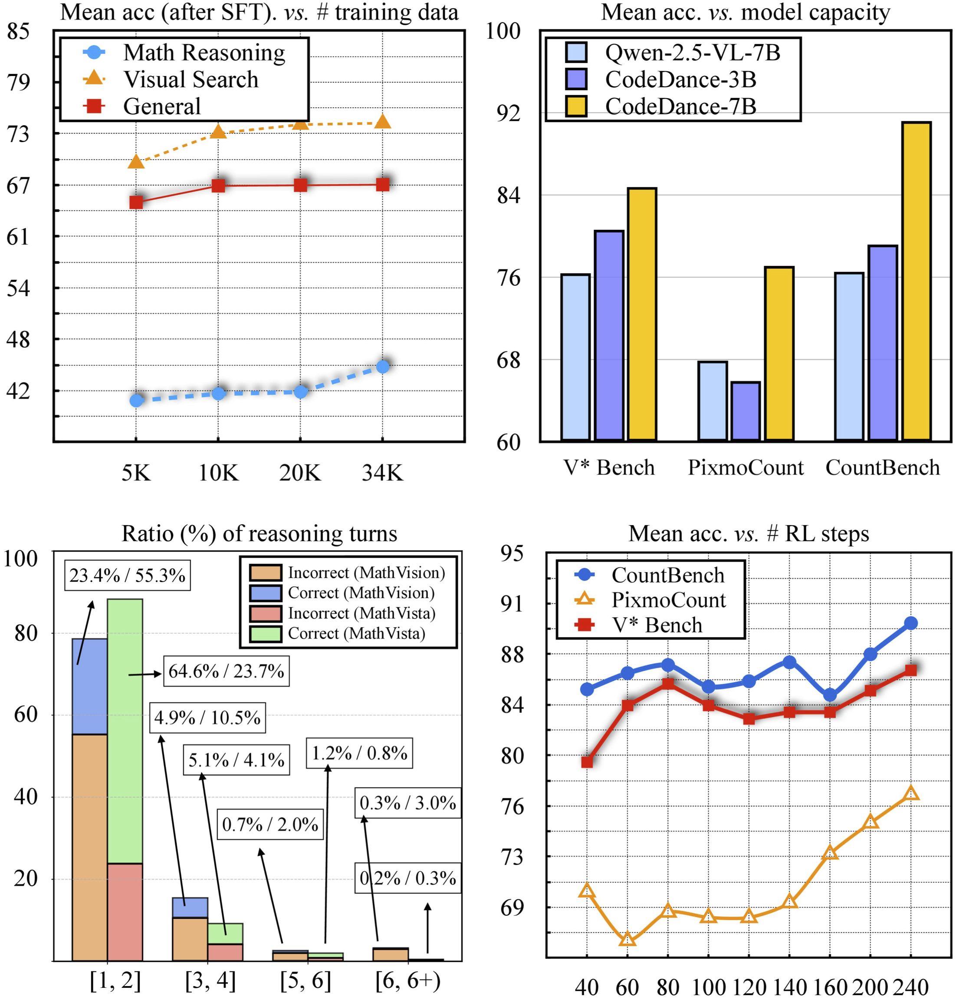

CodeDance: A Dynamic Tool-integrated MLLM for Executable Visual Reasoning
Abstract
We introduce CodeDance, a dynamic tool-integrated multimodal large language model that treats executable code as a general solver for visual reasoning. Instead of relying on rigid, text-only pipelines, CodeDance plans, composes, and executes visual–symbolic operations while rendering intermediate artifacts, enabling a transparent, self-checkable reasoning process.
CodeDance scales up multimodal tool-based reasoning by letting the model think, write code, execute it, and reflect in a single loop. Rather than following fixed schemas, CodeDance dynamically decides when and how to invoke tools, orchestrates visual-symbolic operations (crop, draw, count, plot) in a sandbox, and uses intermediate visual evidence to guide subsequent reasoning over multiple interaction turns.
Our design choice yields transparent, self-checkable solutions to challenging visual search and reasoning tasks and offers a practical recipe for “thinking with images” via executable code and reinforcement learning.
Importantly, we answer the question: "Do we always need tools for visual reasoning?" Our work demonstrates that state-of-the-art MLLM reasoning performance does not necessarily require always-on tool use ability. In contrast, the tool-integrated visual reasoning should be task-adaptive and difficulty-aware.
Dynamic, Difficulty-aware, visual tool-calling
CodeDance dynamically invokes tools according to task difficulty to prevent both tool underuse (unable to invoke tools on challenging tasks) and tool overuse (redundant calls on easy tasks).

Overview and Training Recipes
CodeDance is a dynamic tool-integrated MLLM that leverages executable code as a general solver for visual reasoning, enabling a transparent, self-checkable reasoning process.

Our training / inference pipeline consists of three stages:
-
Stage 1: Task-aware Cold-start via Supervised Fine-tuning. We construct a 34k high-quality dataset of executable multi-turn trajectories to initialize the model before RL.
- Weak-to-strong filtering. Aggregate public datasets (e.g., SA1B, GEOqa_plus, MMK12) and apply automatic filtering. We employ a weak model (Qwen2.5-VL-7B) to prune trivial cases, while a strong model further stratifies the remaining samples into medium and hard difficulty levels.
-
Multi-turn atomic supervision. We decompose hard cases into verifiable executable trajectories across three atomic categories:
- Predefined visual operations. Annotated via predefined workflows to ensure reproducibility and scalability. Visual outputs (e.g., cropped views) serve as evidence for stepwise reasoning.
- Mathematical computation. Measurement, algebra, aggregation executed via Python/NumPy/SymPy with error filtering. A Reasoning Model first produces chain-of-thought, which is segmented into a multi-step procedure; complex computational steps within the procedure are then translated into executable code.
- Open-ended operations. The model can execute arbitrarily complex code that helps solve the task (e.g., drawing, annotation), enabling flexible and task-adaptive tool use.
-
Stage 2: Difficulty-adaptive Reinforcement Learning.
We optimize with a composite reward that integrates outcome and tool signals. Our two-level reward (Balanced Adaptive Tool-call), denoted as \( R_{\mathrm{BAT}} \), balances task difficulty with step-wise tool-call correctness:
\[ R_{\mathrm{BAT}} = R_{\mathrm{seq}} + R_{\mathrm{turn}}. \] -
Sequence-level. Difficulty-aware incentives adapt to group accuracy to discourage redundant calls on easy problems and promote exploration on hard ones. Formally:
Here, \(N_{\mathrm{succ}}(\tau)\) and \(N_{\mathrm{total}}(\tau)\) denote successful and total tool calls in trajectory \(\tau\). The difficulty factor \(d\) shrinks when the group accuracy \(\mu_{\mathrm{acc}}\) is high (easy queries) and grows when \(\mu_{\mathrm{acc}}\) is low (hard queries), suppressing redundant tool invocations on easy cases while amplifying rewards for helpful tool use on challenging ones.
\[ R_{\mathrm{seq}} = \Big(0.5 + 0.5 \cdot \mathbb{I}_{R_{\mathrm{acc}}(\tau) > 0}\Big) \cdot d \cdot \frac{N_{\mathrm{succ}}(\tau)}{N_{\mathrm{total}}(\tau)}, \quad \] where\[ d = \sigma\!\big(\gamma (0.5 - \mu_{\mathrm{acc}})\big) - \delta, \quad \sigma(z) = \frac{1}{1 + e^{-z}}. \] -
Turn-level. Immediate penalties for failed executions plus a batch-normalized advantage to provide dense correction. For each turn \(m\), failed code execution incurs an immediate penalty \(r_{\mathrm{turn},m} = -0.5\) (otherwise \(0\)). To capture long-term effects, we define the accumulated discounted return and advantage as:
\[ G_{\mathrm{turn}}^{m} = r_{\mathrm{turn}}^{m} + \beta \cdot G_{\mathrm{turn}}^{m+1}, \qquad A_{\mathrm{turn}}^{m} = \frac{G_{\mathrm{turn}}^{m} - \mu_{\mathrm{batch}}}{\sigma_{\mathrm{batch}}}. \] This turn-level signal assigns credit to correct intermediate tool executions, discouraging reward hacking where the final answer is correct but tool use is erroneous.
The final advantage combines sequence- and turn-level signals:
\[ A(\tau) = A_{\mathrm{seq}}\!\big(R_{\mathrm{acc}}, R_{\mathrm{format}}, R_{\mathrm{seq}}\big) + A_{\mathrm{turn}}\!\big(G_{\mathrm{turn}}\big). \]
-
Synthesis of tool-integrated visual trajectories
To initialize CodeDance before RL, we curate a high-quality cold-start dataset of executable multimodal trajectories. Following the pipeline described in our methodology and appendix, we apply weak-to-strong filtering to stratify difficulty and then build multi-turn atomic supervision. The first figure shows trajectory synthesis; the second shows an example curated trajectory. Select a figure to view it at full resolution.


Experiments on General & Reasoning Benchmarks
We conduct systematic evaluations across visual search, math, counting, and chart understanding benchmarks. CodeDance consistently outperforms text-only and schema-driven baselines and, in several settings, surpasses larger open-source and advanced closed-source models.
| Model | Visual Counting | Visual Search | General | ||||
|---|---|---|---|---|---|---|---|
| CountBenchQA | PixmoCount | V*Bench | HR4K | HR8K | ChartQA | CharXiv | |
| Closed-Source MLLMs | |||||||
| GPT-4o | 87.9 | - | 67.5 | 65.0 | 59.6 | 86.7 | 47.1 |
| Open-Source MLLMs | |||||||
| LLaVA-OneVision-7B | 82.3 | 54.4 | 72.7 | 68.5 | 60.0 | 80.4 | 27.1 |
| LLaVA-OneVision-72B | - | 60.7 | 73.8 | 66.3 | 60.9 | 83.7 | - |
| InternVL2.5-8B | 55.9 | - | 73.7 | 72.0 | 65.5 | 82.8 | 37.2 |
| InternVL3-8B | 80.3 | - | 70.2 | 70.5 | 70.0 | 86.1 | 38.3 |
| InternVL3-78B | - | - | 76.4 | 75.5 | 67.3 | 89.7 | 46.0 |
| Qwen2.5-VL-72B | 93.6 | 62.3 | 84.8 | 79.4 | 76.3 | 89.5 | 49.7 |
| Qwen2.5-VL-32B | 87.8 | 56.0 | 85.9 | 74.8 | 71.6 | - | 47.6 |
| Qwen2.5-VL-7B | 76.5 | 50.4 | 76.4 | 69.0 | 66.0 | 86.3 | 42.1 |
| Open-Source MLLMs with Tools | |||||||
| Pixel Reasoner-7B | - | - | 84.3 | 72.9 | 66.9 | - | - |
| DeepEyes-7B† | 80.4 | 57.2 | 90.4 | 74.8 | 71.9 | 78.2 | - |
| Thyme-VL-7B | 84.8† | - | 82.2 | 77.0 | 72.0 | 86.1 | 44.2† |
| CodeDance-7B | 91.2 | 77.1 | 84.8 | 75.2 | 72.3 | 87.5 | 44.1 |
| Δ vs. Qwen2.5-VL-7B | ↑19.2% | ↑53.0% | ↑11.0% | ↑9.0% | ↑9.5% | ↑1.4% | ↑4.7% |
| Model | MathVision | MathVista | MathVerse | WeMath |
|---|---|---|---|---|
| GPT-4o | 36.5 | 63.4 | 35.3 | 44.2 |
| Qwen2.5-VL-72B | 38.1 | 74.8 | 57.6 | - |
| R1-OneVision-7B† | 29.9 | 64.1 | 40.0 | - |
| R1-VL-7B† | 24.7 | 63.5 | 40.0 | - |
| InternVL2.5-8B | 22.0 | 64.4 | 39.5 | 23.9 |
| LLaVA-OV-7B | 18.4 | 63.2 | 26.2 | 17.3 |
| Qwen2.5-VL-7B | 25.0 | 68.1 | 45.1 | 35.4 |
| DeepEyes-7B | 26.6 | 70.1 | 47.3 | 38.9 |
| CodeDance-7B (Ours) | 29.6 | 70.3 | 46.8 | 39.6 |
| Components | CountBench Acc. / Turns |
PixmoCount Acc. / Turns |
MathVision Acc. / Turns |
MathVerse Acc. / Turns |
V* Acc. / Turns |
HR4K Acc. / Turns |
HR8K Acc. / Turns |
Avg. Acc. / Turns |
|---|---|---|---|---|---|---|---|---|
| SFT Cold-Start (w/o RL) | 85.3 1.2749 |
66.9 1.3902 |
23.0 2.8388 |
41.4 2.1904 |
82.7 2.0052 |
72.1 1.1713 |
67.1 1.0875 |
62.6 1.7083 |
| RL with Racc + Rformat | 88.4 1.0200 |
71.2 1.0170 |
26.0 2.1086 |
46.5 1.9569 |
82.7 1.1728 |
73.4 1.0413 |
69.0 1.0375 |
65.3 1.3363 |
| + RDeepEyes | 85.1 2.5960 |
64.4 2.5341 |
25.2 3.2270 |
44.0 2.5190 |
83.3 2.0000 |
74.6 2.0888 |
68.4 2.0525 |
63.6 2.4311 |
| + RBAT (Ours) |
89.0 1.0000 |
72.5 1.0000 |
27.0 2.0461 |
46.3 2.1662 |
82.7 1.2094 |
73.8 1.2251 |
69.4 1.1950 |
65.8 1.4060 |
Note: † denotes results reported from official papers.
Key Findings: Emergent Behaviors during RL
Throughout the RL process, we consistently observe novel and surprising reasoning trajectories (below) that go beyond the atomic supervision provided during SFT. These findings point toward the scalability of code as a general reasoning medium, and we empirically study the potential in our work.

Training scalability and Test-time Scaling (TTS)
We show that without task-specific fine-tuning, CodeDance exhibits emergent capabilities beyond supervised primitives: novel tool invocations, unseen tool compositions, and cross-task transfer, demonstrating strong generalization at inference. We additionally validate the potential of scalability across four main dimensions: (1) amount of training data, (2) scale of the foundation model, (3) max test-time reasoning turns and (4) number of RL steps.


BibTeX
If you find our work useful and inspiring to your research, please consider citing our work:@article{Song2025codedance,
title={CodeDance: A Dynamic Tool-integrated MLLM for Executable Visual Reasoning},
author={Song, Qi and Li, Honglin and Yu, Yingchen and Zhou, Haoyi and Yang, Lin and Bai, Song and She, Qi and Huang, Zilong and Zhao, Yunqing},
journal={arXiv preprint arXiv:2512.17312},
year={2025}
}